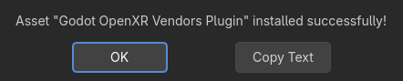

Using the Asset Store in the Engine
Accessing it
The Asset Store can be accessed from within Godot from the project manager.

As well as within the editor.

The Project Manager's tab will only display assets that are standalone projects. This is denoted on the Asset Store with the Template tag.
The editor's tab will only display assets that are not standalone projects. In other words, it will display assets from all categories except Templates.
If this is the first time you've ever needed the engine to access the internet, you'll need to click the button.

Downloading and installing assets
Click on an asset, and Godot will fetch info about it from the Asset Store. Once it's finished, you will see a window similar to what the Asset Store website looks like, with some differences:

Similarly to the web version of the Asset Store, here you can search for assets by category or name, and sort them by things such as name or edit date. Unlike when using the web frontend, the search results are updated in real-time (you do not have to press after every change to your search query for the changes to take effect).
When you click on an asset, you will see more information about it.

If you click on the button, Godot will fetch an archive of the asset, and will track download progress of it at the bottom of the editor window. If the download fails, you can retry it using the button.
When it finishes downloading, the Configure Asset window will open automatically.

Here you can see a list of all the files that will be installed. If you click on the arrow on the top left, it will open a window where you can tick off any of the files that you do not wish to install. Any files that can't be installed will be shown in red, and hovering over them will show you a message stating why it cannot be installed.

Once you are done, you can press the button, which will unzip all the files in the archive, and import any assets contained in it, such as images or 3D models. Once this is done, you should see a message stating that the package installation is complete.

You may also use the button to import asset archives obtained elsewhere (such as downloading them directly from the Asset Store web frontend), which will take you through the same package installation procedure as with the assets downloaded directly via Godot that we just covered.